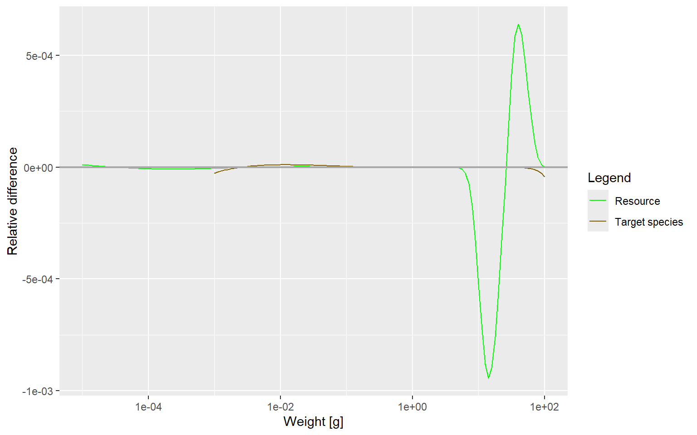

library(mizer)
library(patchwork)
library(reshape2)
library(plotly)
library(dplyr)
library(mizerExperimental)
library(tidyverse)
params <- newSingleSpeciesParams(lambda = 2.05)
# Low resource rate variant
params_low_r <- setResource(params, resource_rate = 0.001,
resource_dynamics = "resource_semichemostat")
# Switch base params to semichemostat too
params <- setResource(params, resource_dynamics = "resource_semichemostat")
# Run base at FULL initial populatio
sim_base_no_reduction <- project(params, t_max = 100)
# Knock down initial population for the other two
initialN(params) <- initialN(params) * 0.01
initialN(params_low_r) <- initialN(params_low_r) * 0.01
sim_base <- project(params, t_max = 100)
sim_low_r <- project(params_low_r, t_max = 100)Stuff that’s confusing
mizer
diagnostics
methodology
The plotSpectraRelative output from yesterday looked informative but is actually comparing two things that differ in two ways at once, making the signal uninterpretable.
The Plot in Question
Here is the code that produced the confusing result:
plotSpectraRelative(sim_base_no_reduction, sim_low_r)
The plot shows a dramatic dipole spike in the resource spectrum around 1–100g, with the fish (Target sp ecies) line sitting almost flat at zks like a meaningful signal about resource depletion. It is not — or at least, not in a way you can trust.
What plotSpectraRelative Actually Computes
The function takes two simulations and plots, at each size class \(w\):
\[\text{relative difference}(w) = \frac{N_2(w) - N_1(w)}{N_1(w)}\]
where \(N_1\) is the final spectrum from the first argument and \(N_2\) is the final spectrum from the second argument. It does this separately for the resource spectrum and for each fish species.
So plotSpectraRelative(sim_base_no_reduction, sim_low_r) is answering the question:
At the end of the run, how does
sim_low_rdiffer fromsim_base_no_reduction, as a fraction ofs im_base_no_reduction?
That sounds reasonable. The problem is in what actually differs between those two simulations.
The Two Confounds
sim_base_no_reduction and sim_low_r differ in two ways simultaneously:
sim_base_no_reduction |
sim_low_r |
|
|---|---|---|
| Initial fish population | 100% of equilibrium | 1% of equilibrium |
| Resource rate | Default (semichemostat) | 0.001 (semichemostat) |
When the relative difference plot sh to know whether it comes from the dif ferent initial conditions, the different resource rate, or some interaction between the two. The compar ison is confounded.
This matters because the two effects work in opposite directions on the resource:
- Lower resource rate → resourcesh draw it down further below equilibr ium → resource is lower in
sim_low_r - Fewer starting fish → less grazing pressure during the recovery phase → resource is higher in
sim_low_rearly on
What the plot is showing is the net result of these two forces at \(t = 100\), and there is no principled way to disentangle them from this plot alone.
Why the Dipole Shape Is Confusing
The resource line shows a sharp negative dip at roughly 1–10g followed by an equally sharp positi ve spike at roughly 10–100g. This , a jam precursor, or some structured oscillation. It is probably none of those things.
In single-species MIZER, fish feed on prey roughly \(1/\beta\) of their own body mass, where \(\beta \appr ox 100\) by default. A fish of mass 100g–1000g feeds on resource in the range 1g–10g. So:
The dip at 1–10g is the feeding zone: lower resource rate means slower replenishment, so fish dra w the resource down more at those sizes. That part is real and is a resource-rate effect.
The spike at 10–100g is harder to read. These are sizes at the upper end of the resource spectrum , above where the fish feed most actively. The excess there likely reflects a transient:
sim_low_rst arted with very few fish, so during less grazing pressure at those sizes, and by \(t = 100\) the resource may not yet be fully equilibrated at the top end of its spectrum.
In other words: the dipole is a mixtfect (the dip) and a residual transien t (the spike) that exists because sim_low_r started from a completely different initial condition.
Why the Fish Line Is Flat
The Target species line is essentially zero across all sizes. This means both simulations produced near ly identical fish spectra by \(t = 100\), despite starting at different initial populations and having di fferent resource rates.
This is actually a useful diagnostic result, but not a reassuring one. It says one of two things:
The fish dynamics equilibrate fast enough that both runs converged to the same fish steady state by \(t = 100\) regardless of where they started. In that case, the fish spectrum is not sensitive to resourc e rate at this parameter regime, which reinforces the Day Two finding that the maturation bottleneck is dominating.
The fish in
sim_low_rare still recovering from the 1% knockdown, but their recovery trajectory ha ppened to land at almost the same fish density assim_base_no_reductionat \(t = 100\) by coincidence o f timing.
Either way, the flat fish line is not evidence that the resource rate doesn’t matter — it is evidence that the fish converge to approximately the same abundance regardless, which means the system is not i n the instability regime yet.
Code is confusing - says the dip in resource should be at 10 grams rather than 1 gram, which the predator prey size preference parameter seems to indicate.
p <- newSingleSpeciesParams(lambda = 2.05)
r <- resource_rate(p) r <- r0.001 p <- setResource(p,resource_rate = r,resource_dynamics = “resource_semichemostat”) rng <- test_sizes[[“large”]] idx <- p@w >= rng[1] & p@w <= rng[2] initialN(p)[, idx] <- initialN(p)[, idx] 5
sim <- project(p, t_max = 20,t_save = 0.5)
animateSpectra(sim,resource=TRUE,log_x=TRUE,log_y=FALSE,power=2)
species_params(p) getResourceMort(sim) # Deviation from power law deviation_plot(sim, paste(“Deviation — bump at”, label, “range”))
p <- newSingleSpeciesParams(lambda = 2.05)
r <- resource_rate(p) r <- r0.001 p <- setResource(p,resource_rate = r,resource_dynamics = “resource_semichemostat”) rng <- test_sizes[[“large”]] idx <- p@w >= rng[1] & p@w <= rng[2] initialN(p)[, idx] <- initialN(p)[, idx] 5
sim <- project(p, t_max = 20,t_save = 0.5)
animateSpectra(sim,resource=TRUE,log_x=TRUE,log_y=FALSE,power=2)
species_params(p) getResourceMort(sim) # Deviation from power law deviation_plot(sim, paste(“Deviation — bump at”, label, “range”))
p <- newSingleSpeciesParams(lambda = 2.05)
r <- resource_rate(p) r <- r0.001 p <- setResource(p,resource_rate = r,resource_dynamics = “resource_semichemostat”) rng <- test_sizes[[“large”]] idx <- p@w >= rng[1] & p@w <= rng[2] initialN(p)[, idx] <- initialN(p)[, idx] 5
sim <- project(p, t_max = 20,t_save = 0.5)
animateSpectra(sim,resource=TRUE,log_x=TRUE,log_y=FALSE,power=2)
species_params(p) getResourceMort(sim) # Deviation from power law deviation_plot(sim, paste(“Deviation — bump at”, label, “range”))
p <- newSingleSpeciesParams(lambda = 2.05)
r <- resource_rate(p) r <- r0.001 p <- setResource(p,resource_rate = r,resource_dynamics = “resource_semichemostat”) rng <- test_sizes[[“large”]] idx <- p@w >= rng[1] & p@w <= rng[2] initialN(p)[, idx] <- initialN(p)[, idx] 5
sim <- project(p, t_max = 20,t_save = 0.5)
animateSpectra(sim,resource=TRUE,log_x=TRUE,log_y=FALSE,power=2)
species_params(p) getResourceMort(sim) # Deviation from power law deviation_plot(sim, paste(“Deviation — bump at”, label, “range”))